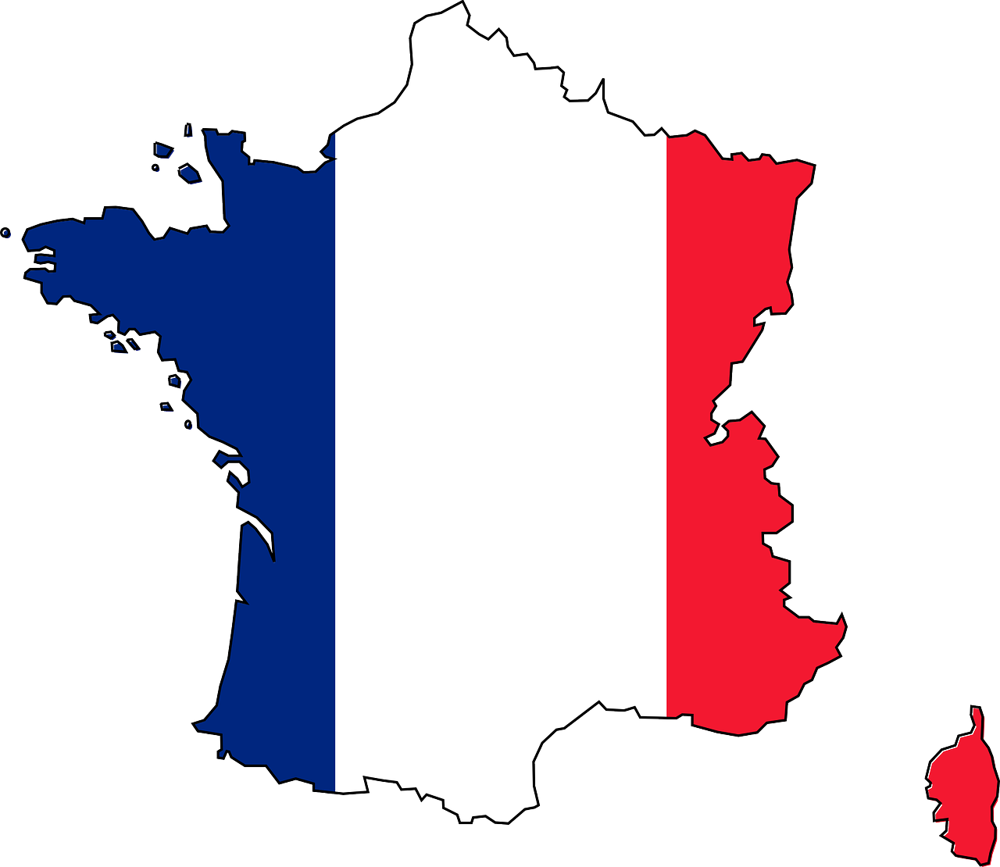
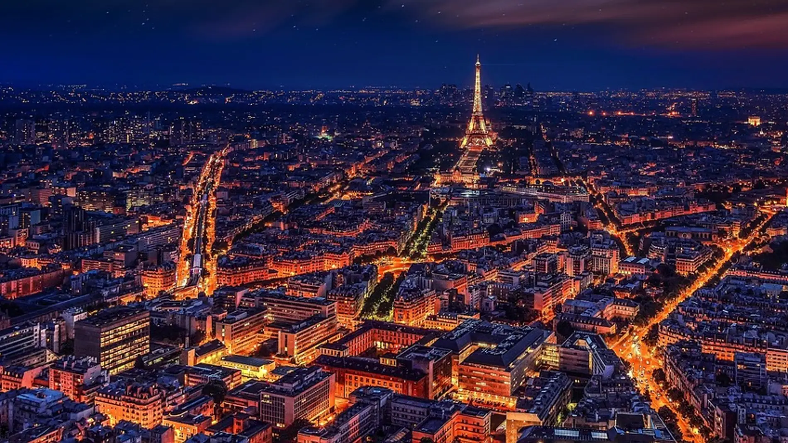
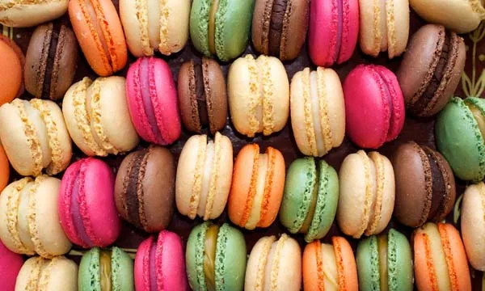
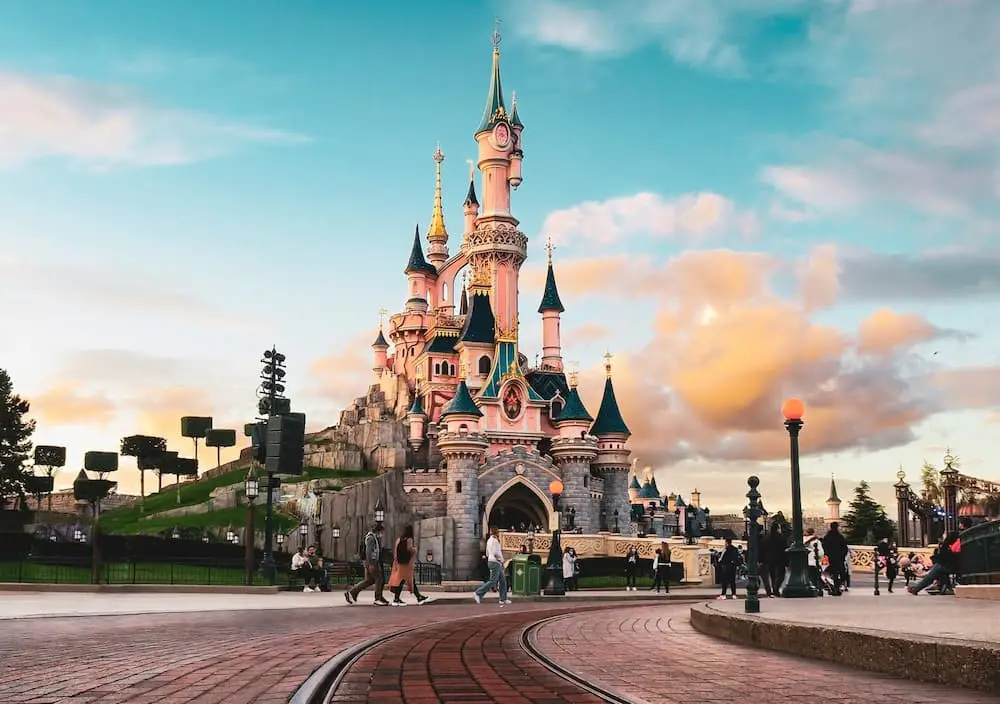
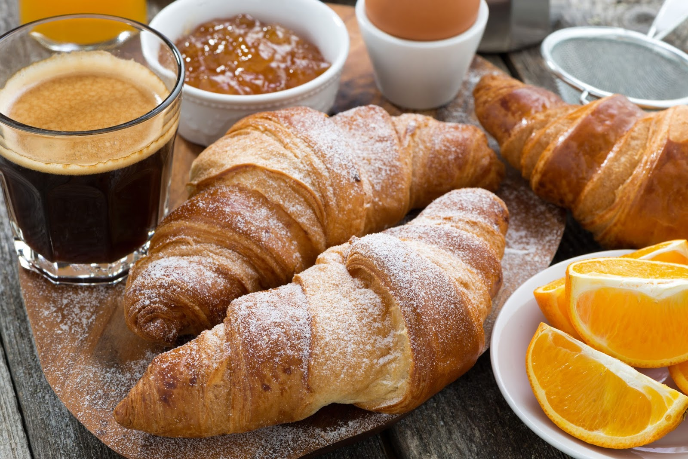

Historia

La historia de Francia comienza en fuentes escritas durante la Edad del Hierro, cuando historiadores romanos llaman a la región la Galia. Esta estaba habitada principalmente por los galos, pueblos de origen celta que no mantenían una unidad política, rivalizaban entre ellos y usaban la escritura de manera marginal.
Ciudades

Algunas de las ciudades de Francia mas interesantes para visita son: París, Lyon,Marsella, Estrasburgo, Burdeos, Lila, Montpellier, Paris, Nantes...
Gastromía

La gastronomía de Francia está caracterizada por su variedad, fruto de la diversidad regional francesa, tanto cultural como de materias primas, pero también por su refinamiento. Su influencia se deja sentir en casi todas las cocinas del mundo occidental, que han ido incorporando a sus bases conocimientos técnicos de la cocina francesa. Varios chefs franceses tienen una gran reputación internacional, como es el caso de Taillevent, La Varenne, Carême, Escoffier, Ducasse o Bocuse. Es una de las cuatro gastronomías incluida en la lista del Patrimonio Cultural Inmaterial de la Humanidad, desde el 16 de noviembre de 2010.
Atracciones

Francia, en Europa Occidental, abarca ciudades medievales, villas alpinas y playas mediterráneas. París, su capital, es famosa por sus firmas de alta costura, los museos de arte clásico, como el Louvre, y monumentos como la Torre Eiffel. El país también es reconocido por sus vinos y su gastronomía sofisticada. Los dibujos de la antigua cueva de Lascaux, el teatro romano de Lyon y el imponente Palacio de Versalles dan fe de su rica historia.
Costumbres

La comida y el vino son fundamentales en todas las reuniones, ya que se socializa mucho en la mesa y las cenas suelen prolongarse. Uno de los platos franceses más clásicos es el boeuf bourguignon, un guiso estofado de ternera, vino tinto, ajo, cebolla y champiñones. París es el hogar de la alta costura y la moda. Los franceses se enorgullecen de su elegancia sartorial, combinando sin esfuerzo la sofisticación clásica con un toque de estilo vanguardista. Los atuendos típicos franceses incluyen vestidos sofisticados, trajes, abrigos largos, bufandas y boinas. El término haute (alta costura) se asocia con la moda francesa y, en términos generales, significa prendas elegantes que están hechas a mano o por encargo. Fiestas y tradiciones: Los franceses celebran las fiestas cristianas de Navidad y de Pascua. También festejan el Día del Trabajador (1 de mayo) y el Día de la Victoria en Europa (8 de mayo) conmemorando así el final de la Segunda Guerra Mundial.